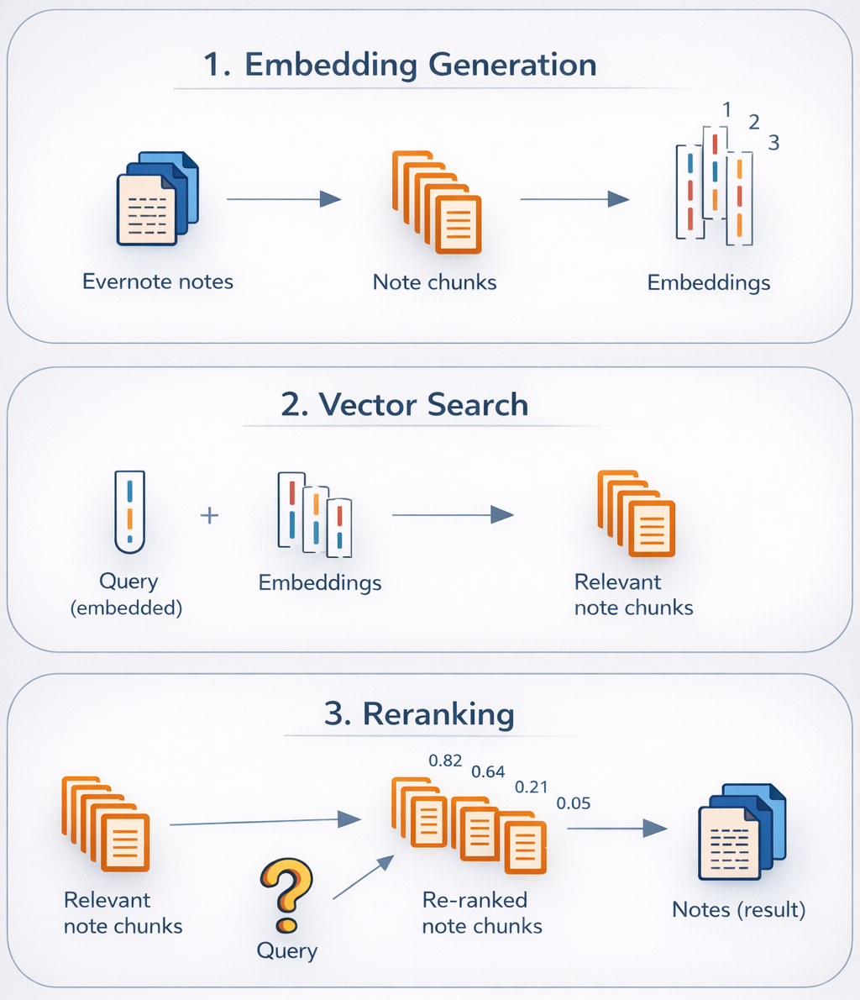
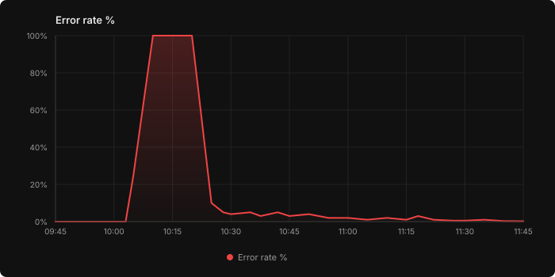
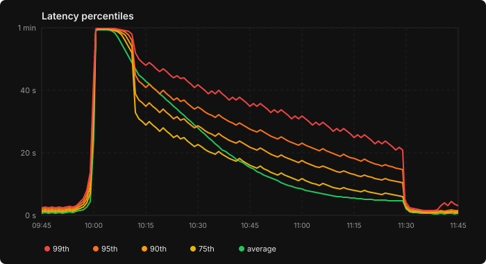
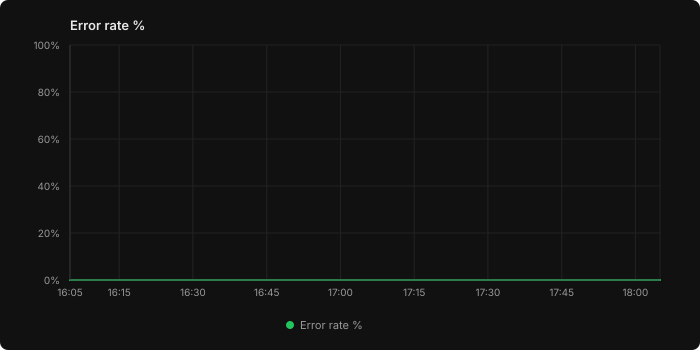
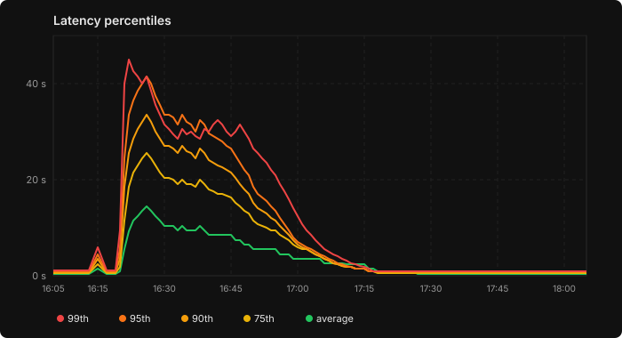
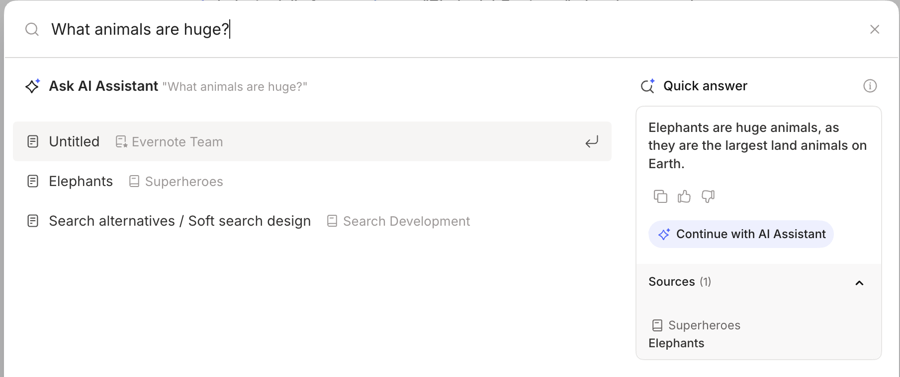
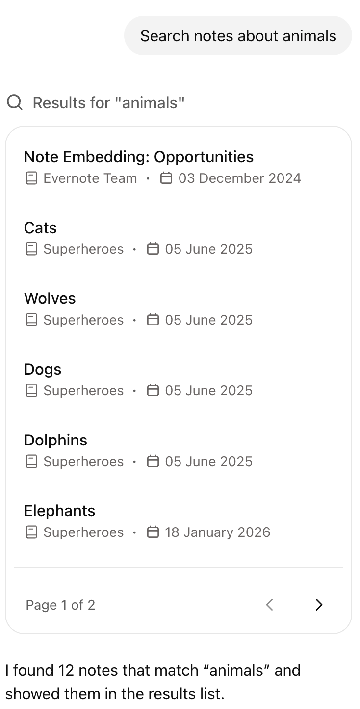

Building Semantic Search
for 9 Billion Notes
How we moved Evernote from keyword matching to meaning-based search — from choosing models to deploying on our own GPU infrastructure, all while keeping user data private.
A new kind of search
Evernote users add content every day: notes, documents, images, PDFs, and more. Over time, accounts fill up, and finding something from months or years ago becomes a real challenge. The default search experience has a key limitation: it relies on exact keyword matching. If you can't remember the precise words you used in a note, you won't find it.
Semantic search solves this. Instead of matching letters, it matches meaning. This opens the door to natural wording and integration with powerful AI features like search overviews, Q&A on your notes, and automated note editing and organization. These tools can't rely on guessing exact keywords. They need a search layer that's flexible but accurate. Overall, semantic search can change Evernote's search experience from the ground up!
Semantic search came with real challenges. Evernote holds 9 billion notes, making the cost of processing and embedding content significant both in compute and storage. Notes also span a huge range of formats: plain text, bullet lists, reminders, calendar events, audio, and more. Supporting all of these, across multiple languages and topics, makes quality hard to measure and guarantee. Privacy added another hard constraint. Many users store sensitive information in Evernote, such as phone numbers, work documents, and personal records. While we work with trusted third-party partners in other contexts, we wanted users to feel completely confident that their notes never leave our infrastructure, so we built the entire semantic search pipeline in-house.
In this post, we walk through how we built the semantic search pipeline end to end, from choosing the right models to deploying and testing at scale. It was a challenging and rewarding project, and we hope our experience will be useful to other developers tackling similar problems.
The pipeline

The architecture is simple and is built around two models: one for embedding and one for reranking.
- Embedding a note. When a note is saved, it gets split into smaller chunks. Each chunk is then run through the embedding model, resulting in vectors that get stored and indexed.
- Searching for a query. When a user types a search query, it gets converted into an embedding. We then look for the stored vectors that are closest to the query vector in terms of cosine similarity. Cosine similarity determines which notes are most relevant to the query and, more precisely, what note snippet matched.
- Reranking results. To improve accuracy, we add a reranking pass: a second model takes the query and each retrieved chunk together and scores their relevance as a pair. This cross-encoder architecture allows direct attention between the query and the content at the token level, producing more accurate relevance scores than comparing embeddings.
Building this system required several key steps.
Markdown Conversion
The very first step is to convert ENML to a clean, readable format, such as Markdown. Evernote notes are stored in ENML, a custom XML-based format rich with structure. ENML is designed for rendering. It stores information about the components the note is made of in its nodes: titles, images, tasks, and so on. ENML is not convenient for embedding:
- Token inefficiency. XML formats use many separators and metadata that inflate token count without bringing semantic value. Compared to Markdown, XML would result in more embeddings to compute, store, and search, increasing embedding costs at scale, assuming that the chunk size stays fixed.
- Chunking is problematic. When XML files are chunked, the syntax can easily break. A chunk might start in the middle of a tag, leaving the model with incomplete information about the relationship between the nodes.
- Models might not be familiar with ENML. Most models are trained extensively in Markdown. Instead, the models' attention might be less effective on custom nodes used to represent tasks or calendar blocks.
We developed the conversion logic in-house for each ENML node, stripping formatting details such as text color, simplifying the document's structure, and preparing the text for downstream models. On real user notes, we have estimated that the Markdown version of the note is about 0.37 times the size of the note in ENML.
<en-note>
<div style="--en-codeblock:true; ...">
<div>import torch</div>
<div>print('hi')</div>
</div>
<ul>
<li><div>Key point 1</div></li>
<li><div>Key point 2</div></li>
</ul>
</en-note>```
import torch
print('hi')
```
- Key point 1
- Key point 2Example of a structured note with a code block and bullet points in ENML (left) and its Markdown conversion (right). The latter is much more compact and does not retain verbose formatting information.
Embedding model selection
At this point, we had the material to process, but not yet a model to use. Training from scratch requires extensive effort to create a synthetic database, since we don't use customers' data for training. At the same time, using a hosted API would require sending user content to a third party. Open-source embedding models gave us the best of both worlds: state-of-the-art quality we could run entirely within our own infrastructure, with full control over costs, customization, and maintainability.
Our goal was to find an open-source embedding model that was:
- Accurate for our use case: The ideal embedding model should allow for sensible similarity scores, i.e., relevant notes should have higher scores than the others. We specifically care about how the model performs on real note content — often messy, fragmented, and informal, but sometimes highly structured — rather than plain, fluent text.
- Low cost and latency: The model's throughput is essential for quick and cheap processing of the documents. Given that we have billions of notes to process, a difference in model size or inference efficiency can significantly impact costs and the total machine time.
We used the MTEB leaderboard to select our candidates, and we defined a custom evaluation framework for the final selection. MTEB is a public benchmark that evaluates embedding models with various datasets and retrieval task types. Given that our use case in Evernote is also quite broad, we considered the MTEB score a reliable prior for models' accuracy. At the time of testing, these were considered among the best lightweight models: Qwen2 1.5B Instruct, Qwen3 Embedding 0.6B, GTE Multilingual Base 0.4B, E5 Multilingual Large Instruct, and Qwen3 Embedding 8B.
Some of them proved to be inferior in early tests and were discarded. To select the winner, we implemented a custom evaluation framework within a synthetic Evernote account containing 481 realistic notes and 38 hard queries. The task was to embed the query and the notes so that the note containing the information about the query's topic would score as high as possible in the ranking. Queries were designed by hand to have little or no word overlap with the corresponding note, and sometimes to not even match the language. Notes were truncated when too long, but other than that, no chunking was done.
- 1. Search Service — Production Readiness Requirements 48.08
- 2. Prometheus 46.02
- 3. GROWTH 42.47
- 4. Microservices — search-metrics-service 40.97
- 5. Service Monitoring 40.87
Example test case. The model ranked the expected note as second — achieving partial success.
| Model | Acc @1 | Acc @5 | Chunk size | Overlap |
|---|---|---|---|---|
| Qwen2 1.5B Instruct | 61% (23/38) | 89% (34/38) | 2000 | 200 |
| Qwen3 0.6B | 47% (18/38) | 71% (27/38) | 2000 | 200 |
| Qwen3 8B | 61% (23/38) | 87% (33/38) | 2000 | 400 |
Accuracy scores on the internal dataset. Accuracy@1 = expected note returned first. Accuracy@5 = expected note in top 5.
We chose Qwen2 1.5B Instruct as an embedding model, the top performer on our accuracy test. On top of that, the model could be run using Text Embedding Inference, a toolkit that allows inference at high speed, which is useful to keep costs under control.
Chunk size
Large notes aren't fed to the model all at once. There are notes with over 100K characters, and compressing all that information into a single vector would be lossy. Instead, notes are split into chunks, which are embedded individually. Though there are several strategies for chunking that aim at preserving paragraphs, sentences, or token size, we went for the simplest strategy, with a fixed length of characters and an overlap. We experimented with tokenization, but it was too CPU demanding compared to the alternative, and we did not observe significant quality gains that would justify its adoption. In our experience, the chunk size does not affect retrieval accuracy much: we tested several chunk sizes in our evaluation set of notes and noticed little change in performance.
Retrieval performance from our embedding model Qwen2 1.5B Instruct varying chunk size.
In the end, we chose a chunk size of 3000 characters, slightly bigger than the optimal value from tests. Larger chunks mean fewer embeddings per note, which speeds up search — there are fewer vectors to compare against — and reduces storage costs.
Reranker
With the embedding model and chunking strategy in place, we tested the pipeline on internal Evernote accounts. Two things stood out:
- Good Recall: The relevant notes appeared among the first results.
- Bad Precision: Many notes that were empty or not so relevant ranked considerably high.
We added a reranking model to post-process results. While embedding-based retrieval scores query and document separately via cosine similarity over their vector representations, a reranker takes the concatenation of query and document as input and outputs a relevance score directly. Trained on large datasets of query–document pairs with relevance labels, rerankers learn to perform token-level comparisons between the two texts, catching relevance signals that are lost when information is compressed into a single embedding vector. This makes them slower — they must evaluate each candidate individually — but significantly more precise, which is exactly what we needed at this stage of the pipeline.
With a reranker in place, only genuinely relevant notes surface in the UI, and RAG applications receive a cleaner context since extra chunks can be pruned more aggressively without hurting recall.
- 0.82 Lunch spots near HQList of restaurants within walking distance, ratings and…
- 0.78 Rome trip food diaryDay 2: found an amazing trattoria near Piazza Navona…
- 0.75 Team dinner planningShortlist of restaurants for the team offsite dinner…
- 0.73 Meeting notes — Oct 14Discussed office layout changes and lunch catering options…
- 0.71 Weekly groceriesMilk, eggs, bread, chicken, rice, olive oil, tomatoes…
- 0.70 Untitled note(empty)
- 0.93 Lunch spots near HQList of restaurants within walking distance, ratings and…
- 0.81 Team dinner planningShortlist of restaurants for the team offsite dinner…
- 0.58 Rome trip food diaryDay 2: found an amazing trattoria near Piazza Navona…
- 0.21 Meeting notes — Oct 14Discussed office layout changes and lunch catering…
- 0.09 Weekly groceriesMilk, eggs, bread, chicken, rice, olive oil, tomatoes…
- 0.03 Untitled note(empty)
The reranker rescores and reorders results, pushing irrelevant or empty notes below the threshold. Only notes above the cutoff are returned to the user.
As a reranker model, we selected Qwen3-Reranker-0.6B. This model is lightweight and can be run very efficiently with vLLM as an inference server. This improved precision significantly.
Deployment
Infrastructure and tech stack
Proprietary AI Infrastructure
Proprietary GPU inference stack to run AI models on GPUs at large scale.
Inference Servers
vLLM and HuggingFace TEI for fast, high-throughput serving of the embedding and reranking models.
ElasticSearch
Vector database to store embeddings and search.
Proprietary AI infrastructure
At Bending Spoons, we maintain a proprietary GPU inference platform, internally known as Pantheon, built for scalability and cost-efficient serving at high request volumes. Pantheon is designed for throughput-oriented workloads, meaning scenarios with a large number of requests where strict real-time latency constraints do not apply. This use case is a natural fit: we don't need ultra-low latency because a user rarely needs to retrieve a note they have just written, so messages can wait in the queue for tens of seconds without impacting user experience.
Architecture
Pantheon is a collection of deployments, each with a specific GPU model, autoscaler, and running a different AI application. A deployment is made of VMs hosting a model container. Unlike a typical REST-based serving layer, Pantheon is message-driven: backends publish inference requests to RabbitMQ rather than calling HTTP endpoints directly, which provides natural load balancing. Pantheon routes each message to the appropriate GPU workers, runs inference, and returns results asynchronously. For semantic search, two applications are running: one for the embedding model and one for the reranker.
Autoscaling
Our embedding workers run on an internal platform that adjusts the number of machines based on demand. Getting the autoscaling policy right proved to be one of the most impactful optimizations across the entire pipeline.
A common autoscaling strategy is to estimate each machine's throughput capacity (messages per second) and provision enough machines to match the incoming rate. This approach can fail for inference servers if their ability to process requests in parallel is not accounted for in the capacity estimation. An autoscaler could see that the machine is always processing something and conclude it is at full capacity, even if the GPU could handle 10x more concurrent work. In our case, each note took roughly 300ms to process, so receiving just 4–5 messages per second was enough for the autoscaler to consider the machine saturated, while an A100 GPU can handle ~250 messages/second incoming at ~40% GPU utilization.
We also added stabilization controls: averaging the metric over a 10-minute window and enforcing cooldown periods between scaling events to avoid oscillation, since GPU machines take several minutes to boot. Scale-down is gradual; scale-up is unrestricted.
Inference servers
To serve these models in production, we used dedicated inference servers rather than loading them directly with PyTorch. Inference servers are optimized runtimes that sit between the application and the model: they accept requests over HTTP, batch them dynamically, and run inference on the GPU with optimizations such as continuous batching and KV caching. Since both embedding and reranking models are transformer-based, they benefit from these optimizations, achieving significantly higher throughput than a naive PyTorch forward pass.
We used two popular implementations for inference servers:
- Text-Embedding-Inference is Hugging Face's purpose-built server for embedding and reranking models. Its key optimization is token-based dynamic batching, instead of batching by number of requests, keeping GPU utilization at ~95%.
- vLLM is an open-source LLM inference engine from UC Berkeley. Its core innovation is PagedAttention, which borrows virtual memory paging from operating systems to manage the KV cache. With continuous batching, GPU slots are freed immediately as sequences complete.
ElasticSearch
Elasticsearch is a distributed search and analytics engine widely used as a vector database for semantic search. We self-host our Elasticsearch cluster, so user data never leaves our infrastructure. In our setup, it stores and retrieves the embeddings produced by the embedding model. When a user submits a query, the query embedding is sent to Elasticsearch, which runs an approximate k-nearest neighbor (kNN) search using the HNSW algorithm to find the most similar vectors across the index. Results are ranked by cosine similarity and returned as candidate note chunks, which are then passed to the reranker.
Index structure
We have two dedicated Elasticsearch indices powering semantic search over user content:
notes— stores note text, metadata (notebook, tags, author, creation date, etc.), and the vector embeddings of the note content. Combining metadata and embeddings in a single index is what makes pre-filtered kNN possible.ocr— stores note metadata and the vector embeddings of OCR-extracted text from note attachments (images, PDFs, etc.). Metadata is duplicated here so that attachment search can be filtered natively without a cross-index intersection.
The fact that we have a single index for deterministic and semantic search, and that we separate notes and OCR indices, is a deliberate architectural choice.
A single index for keyword and semantic search in notes
A unified index for keyword and semantic search enables natural filtering in semantic search, for cases like "Search notes about dogs in the notebook Animals". With two separate indices — one for embeddings and one for metadata — you can still achieve filtered semantic search by running a vector search for "dogs" on the semantic index and a keyword/filter search on the metadata index for "notebook: Animals", then intersecting the results. This approach has several complications, stemming from the fact that the two searches return a limited number of results, so the intersection may be incomplete.
Consider a user with 1,000 notes tagged "videogames" who searches for "Peach" in notes with the tag "videogames". The pipeline fetches the top 100 semantically relevant notes and the top 100 notes with that tag, then intersects. If the one note about the Peach videogame character happens to be note #999 in the tag list, it never appears in either set of 100, so the intersection is empty, even though a perfect result exists. The same failure mode occurs in reverse: if 1,000 notes are semantically close to "Peach" but only one is tagged "videogames", the intersection can be empty. Over-fetching (grabbing 10× more results than needed) mitigates this, but doesn't solve it for large accounts.
Elasticsearch's pre-filtered kNN eliminates this problem entirely. Filters are applied during HNSW graph traversal rather than after it. Candidate nodes that fail the filter are still explored (to preserve graph connectivity) but don't count toward the k results. This guarantees exactly k results satisfying both semantic relevance and the deterministic constraints, with no risk of an empty intersection. To use pre-filtered kNN, though, the metadata fields you want to filter on (notebook, tag, user identity, etc.) must live in the same index as the embeddings.
A separate index for attachments
In Evernote, we let users search within PDFs, images, and other files attached to their notes by indexing the textual content extracted via OCR. Once we decided to unify notes and their embeddings, the natural next question was whether to include attachment embeddings in the same index, too.
In Elasticsearch, each field can be stored in two ways: searchable only (the field's contents are transformed into an optimized internal format for search), or searchable and retrievable (the original content is also stored verbatim in a special _source field). If a document's fields are not fully present in _source, it cannot be updated without deleting and re-creating the entire document.
To keep storage costs under control, we don't store all fields in _source. This creates a problem if note text embeddings and OCR embeddings coexist in the same index: every time a user edits a note, even if the attachments haven't changed, we would need to recompute and re-store the OCR embeddings to recreate the document, which is very costly at our scale.
With a dedicated ocr index, the two entities naturally have different update lifecycles: note content changes frequently; attachment OCR rarely does. Metadata is stored in this index as well so that attachment search can be filtered by notebooks, tags or created date.
Load balancer and autoscaler finetuning
Before deploying the pipeline to production, it needs to be tested and optimized at scale. A naive deployment strategy doesn't work at high request rates: requests get queued and canceled due to timeouts. By running the first test in which 1M notes were sent to the embedding deployment, we noticed that the autoscaler was not able to react to high load of requests.




We ran a series of indexing experiments on the embedding pipeline to optimize error rates, latency, and throughput. We processed 1.5M notes in each run. Each experiment has a slightly different configuration with respect to the previous run, to spot which deployment parameters are relevant to the metrics. The key knobs to tweak are:
- The number of requests to send in parallel to a GPU worker. If this is too low, the GPU memory is not saturated, and the throughput is suboptimal. If it is too large, workers are overwhelmed by requests, increasing latency and causing request loss.
- Autoscaler reactivity. Our autoscaler takes as input a parameter that represents the maximum time allowed to handle a request, i.e. the target maximum request latency.
We concluded that sending a maximum of 5400 chunks in parallel to a single GPU is a good working point, and that the autoscaler tuning should be aggressive (max latency of 100s). This allowed us to obtain an error rate close to 0%.
Embedding all notes
The process of turning notes into vectors was the longest and most stressful part of the project. Processing can take several days, and during that time anything can go wrong. Throughout the process, we monitored dashboards closely and paused processing at the first sign of anything unusual. Evernote holds 9 billion notes in total, but we only maintain a semantic index for users active in the last 60 days — about 3 billion notes. This cutoff is a tradeoff between storage cost and readiness for returning users: if a dormant user comes back, our pipeline can reindex their account in a few minutes.
The ENML-to-Markdown conversion also caused problems: certain heavily structured notes consumed so much memory during parsing that they crashed the converter pods. A single problematic note could cascade into thousands of failed messages in the dead-letter queue. We tested the conversion logic against highly formatted and structurally complex notes to reproduce and fix each crash — from malformed nested lists to deeply recursive formatting tags. After iterating through these fixes until no problematic notes remained, we completed the backfill and transitioned to live indexing, updating embeddings whenever a note is edited.
AI Integrations
With the pipeline deployed and all notes embedded, the infrastructure work was done, and users could start searching their notes using natural language. But search is just the surface — semantic search unlocks even more value when integrated with AI systems. In this section we walk through two integrations: Quick Answer, which surfaces AI-generated responses directly in the search bar, and the AI Assistant, which uses semantic search as a tool inside a conversational agent.
Quick Answer

Our first integration was with the search experience. Evernote has always had a powerful search grammar with advanced syntax for filtering by notebook, tag, date, and more — but its learning curve can be steep. Quick Answer solves this: if the user types a question in the search bar, an LLM replies based on the chunks found relevant by semantic search, leveraging the full power of the search grammar under the hood. Users can find what they need without opening any note and without learning any syntax:
- "What was the WiFi password from the hotel in Rome?"
- "Find my notes about the technology choice for the backend in the notebook Swe-Team"
- "Summarize my notes tagged meeting from April 2024"
Not every query needs a generated answer — sometimes users just want notes. A lightweight intent detection step, powered by RedHatAI/Qwen3-14B-quantized.w4a16 via vLLM, runs in parallel with document retrieval to decide whether to return note results or generate an AI answer. This adds no extra latency to the search path.
To support time- or entity-based filtering, a separate constraint-extraction call parses natural-language constraints — such as "in notebook Swe-Team" or "from April 2024" — into Evernote's structured query language. These deterministic filters are then passed to ElasticSearch's pre-filtered kNN (described in Section 3.1), combining semantic similarity with exact constraints in a single query.
When a generated answer is needed, we feed both the question and the retrieved chunks into Qwen3 14B, producing a concise, contextual response grounded in the user's own notes.
AI Assistant

Semantic search is extremely powerful when plugged into agents as a tool. Evernote's AI Assistant uses semantic search as its primary retrieval mechanism, turning a simple chat interface into a full productivity agent. When the user sends a message, the assistant decides whether a search is needed, formulates the query — including filters on notebooks, tags, or dates — and uses the retrieved notes to fulfill the request.
This goes well beyond answering questions. Because the assistant can read, write, and organize notes, semantic search becomes the backbone of a wide range of automations:
- Find and synthesize: "Summarize everything I've written about project X" — the assistant searches across notebooks, reads the relevant notes, and produces a consolidated report.
- Organize: "Move all my recipes to the Cooking notebook" or "Tag my meeting notes from last week with @work" — the assistant finds the notes semantically, then moves or tags them in bulk.
- Edit and transform: "Rewrite this note as a professional email" or "Extract action items from my meeting notes" — the assistant reads the note content and generates edits.
- Research and create: "Search the web for the latest on X and save it as a note" — the assistant combines web search with note creation.
- Cross-reference: "Which of my notes mention the same topics as this one?" — the assistant leverages embedding similarity to surface related content the user may have forgotten about.
Conclusion
Integrating semantic search into Evernote required solving problems across the full stack: converting a proprietary note format, selecting and hosting embedding and reranking models at scale, designing an index structure that supports filtered vector search, and embedding billions of notes without disrupting live traffic.
The main factors that contributed to the success of the project are:
- The awareness that a concrete product limitation could be solved with a widely adopted technology
- The extensive use of open-source models to save costs from external providers and retain control over sensitive data
- The efficient hosting of models with inference servers (TEI, vLLM) compared to standard implementations
At the same time, there are some limitations or downsides that we are still working on:
Cost. Despite all the effort to run embeddings efficiently and limit the storage overhead, this feature is expensive. We had hundreds of A100 GPUs running during the initial indexing phase. Since then, autoscaler improvements have brought the steady-state fleet down to around 30 A100 machines, and we are exploring a move to more cost-effective GPU instances to reduce costs further.
Overall, the project covered an unusually broad surface area, from model research to infrastructure engineering to product integration, and the retrieval layer it produced now powers the AI features we are building on top of Evernote.
Interested in working on challenges like this? We're hiring.